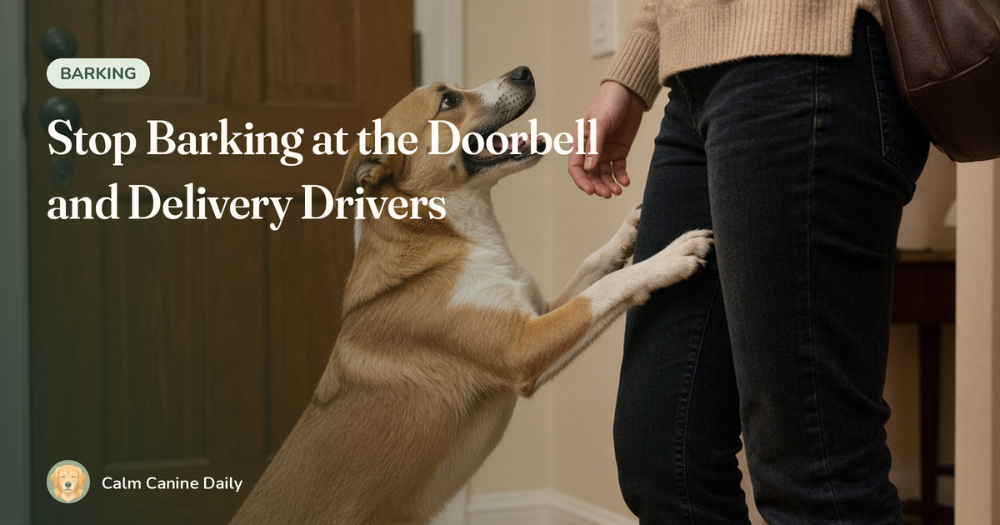

How to Stop Your Dog From Barking at the Doorbell and at Delivery Drivers

The short answer. To stop dog barking at the doorbell, play a quiet recording of the chime and feed before your dog erupts. Raise the volume slowly, then pay a place away from the door. On real deliveries, leash or gate your dog before you open the door, and skip the yell — yelling is just you barking too.
If the problem is a view — people or dogs walking past the glass — that is a different habit. Use our guide on how to stop dog barking at the window. This page is the sound at the door: the chime, the knock, and the Amazon or UPS driver on the porch.
This is a researched how-to for everyday US owners, based on established positive-training methods. It is not a hands-on trial of this plan on a panel of dogs, and it is not a guaranteed quiet doorbell.
Educational content only. Some links on this page are affiliate links. If you purchase through one, we may earn a commission at no extra cost to you. We do not impersonate or speak for any course creator.
About this article. Educational tips from Calm Canine Daily. This is not veterinary advice, a diagnosis, or a promised result. We are not a certified training practice and we do not claim CPDT or DVM credentials. If you are worried about a bite risk or a situation you cannot manage safely, pause and get qualified in-person help.
Who this plan is for: owners whose dog explodes at the doorbell, a knock, or a delivery on the porch, and who can still call the dog away or use a gate. Who this is not for: a dog who panics, hard-stares, or snaps at the door, or a situation you cannot keep safe. That needs a veterinarian or a certified in-person professional (CPDT-KA or CBCC-KA are one useful filter), not a blog post.
Key takeaways
- The doorbell is a reliable rehearsal because the sound predicts a person at the door, and barking often “works.”
- Lower the volume of real-life practice: manage deliveries, then train on a sound your dog can handle.
- Teach a place (a mat or bed) away from the door, and pay it when the bell rings.
- Practice on quiet days. The holiday hallway is not the first classroom.
- Do not yell. Give your dog a job that pays.
In this article
- Why the doorbell is such a reliable rehearsal
- What not to do
- How to stop dog barking at the doorbell: manage real deliveries first
- Desensitize the sound at a whisper volume
- Teach a place when the bell rings
- Practice on quiet Tuesdays, not when the whole hallway arrives at once
- When to get extra help
- FAQ
Why the doorbell is such a reliable rehearsal
A doorbell is not just a noise. For many dogs it predicts a person at the threshold. Alerting can be reasonable. The problem is the rehearsal: the chime happens, your dog erupts, someone opens the door, and the scene often ends. From the dog’s point of view, the bark helped “handle” the event. Each unmanaged ring is another practice rep. You need fewer of those, and a paid alternative: go to a place, look at you, and get fed.
This is also not the same problem as darting out the door. Some dogs bark and bolt. Manage the exit either way, then train the sound and the place separately.
What not to do
Don’t yell at the door. A sharp “quiet!” can match the arousal already in the hallway. Some dogs take it as backup.
Don’t punish the bark and stop there. A scold, a spray, or a shake does not teach the next job, and it can make a worried dog more worried. We do not use or recommend those tools.
Don’t only train when the real driver is on the porch. That is the hard version of the exercise. Start with a sound your dog can hear without exploding.
Don’t leave them stationed at the door all afternoon if you already know the hallway sets them off. That is practice, and practice makes the habit stronger.
How to stop dog barking at the doorbell: manage real deliveries first
Training needs a quieter classroom than a real Amazon drop-off. Until the new habit is started, leash or gate your dog before you open the door; use a phone or camera alert so the chime is not the first news you get; and, when the app allows it, add a note to leave the package without ringing. If you are not training, call your dog away and hand over a chew in another room.
Management is how you stop the habit from being practiced all week while you teach a better one. For jumping once the door is open, see how to stop a dog jumping on guests. For the reunion when you walk in, see your first 30 seconds home.
Desensitize the sound at a whisper volume
You need a doorbell sound you control: a phone recording, a doorbell app, or a helper at a volume you choose.
- Start at a whisper — a volume that makes your dog notice, but not explode. If they already cannot eat, it is too loud.
- Play the sound, then feed a few excellent treats. The sound predicts food, not a sprint to the door.
- Pause. Let them settle. Play it again only while they can still think.
- Raise the volume a little across sessions, not all in one afternoon.
- If they erupt, you went too far. Drop the volume, reset, and get a few easy wins.
Keep these sessions short. You are changing what the sound means, not “proving” they can handle a real truck today.
Teach a place when the bell rings
A place is a mat or bed away from the door, already paid well when the house is quiet.
Toss a few treats onto the mat so your dog steps on it willingly. Pay them for staying. Add a cue such as “place” or “mat” once they are heading there on their own. Then play the quiet doorbell and guide or cue them to the mat. Pay on the mat, not at the threshold.
If they leave the mat when the sound plays, the sound is still too hard, or the mat is not valuable enough yet. Go back to paying the mat with no doorbell, then add the whisper sound again.
The finished picture is: chime, dog goes to the mat (or at least looks at you and moves away from the door), and you pay there. You can then answer the door without a dog in the gap. Combine this with a wait at the door if they also try to dart through.
Practice on quiet Tuesdays, not when the whole hallway arrives at once
A real delivery is a poor first test. Practice on a quiet morning, or with a helper who rings once at a volume and time you chose. When the glance to the mat is easy, make the sound a little more real — a true doorbell, then a knock, then a person on the porch while your dog is leashed or gated.
If a driver is already walking up and you are not training, use management. You can train tomorrow. One messy explosion does not undo a week of quiet practice, but a week of unmanaged rings will.
When to get extra help
Get a veterinarian involved if the barking started suddenly, or if it comes with signs of pain or distress. A quieter doorbell plan is not a substitute for veterinary care.
Get a qualified trainer or behavior professional involved if the door scene includes hard staring, lunging that is getting worse, snapping, or a panic you cannot work around. An article is not enough in those cases, and neither is an online course.
FAQ
Why does my dog bark at the doorbell?
The sound usually predicts a person at the door, so alerting is common. The bark can also become a habit because the event often ends after the noise — the driver leaves, you open the door, the scene changes. You do not have to name the exact emotion to start. Lower the rehearsal and teach a place.
How do I get my dog to stop barking at delivery drivers?
Manage the real drop-off first: leash or gate your dog before you open the door, and ask drivers to skip the ring when you can. Separately, play a quiet doorbell, feed, and teach a place away from the door. Practice on easy days, then work toward a real porch arrival.
Should I yell when my dog barks at the door?
No. Yelling is easy to hear as you joining in, and it still leaves your dog without a next job. Pay a place or a check-in instead, and manage the door so they are not free to rehearse the explosion.
Can I train my dog to go to a place when the doorbell rings?
Yes. Teach the mat when the house is quiet, then pair a whisper-volume doorbell with going to that mat and getting paid there. Raise the volume slowly. On real deliveries, use a leash or gate until the place cue is reliable.
Why does my dog lose it when the Amazon driver shows up?
The driver’s routine is a bundle of cues: the truck, footsteps, a knock or chime, and a stranger at the door. That is a lot to process at once. Split it up. Change what you can about real deliveries, and train the sound and the place when you control the volume.
Related guides
- How to Stop Your Dog From Barking at the Window
- How to Stop Your Dog From Darting Out the Door
- How to Stop Your Dog From Jumping on Guests
- Your First 30 Seconds After You Walk In
- Brain Training for Dogs review
- More barking guides
- Get the free 7-Day Calm Dog Checklist
Sources
Vendor facts about Brain Training for Dogs, including the bonus course “Behavior Training for Dogs” as described on the sales page (barking, including doorbells and other triggers), the advertised $67 price, and the 60-day guarantee, are from the official pages as checked on November 21, 2026: braintraining4dogs.com/get-btfd and braintraining4dogs.com. Confirm current terms at checkout.